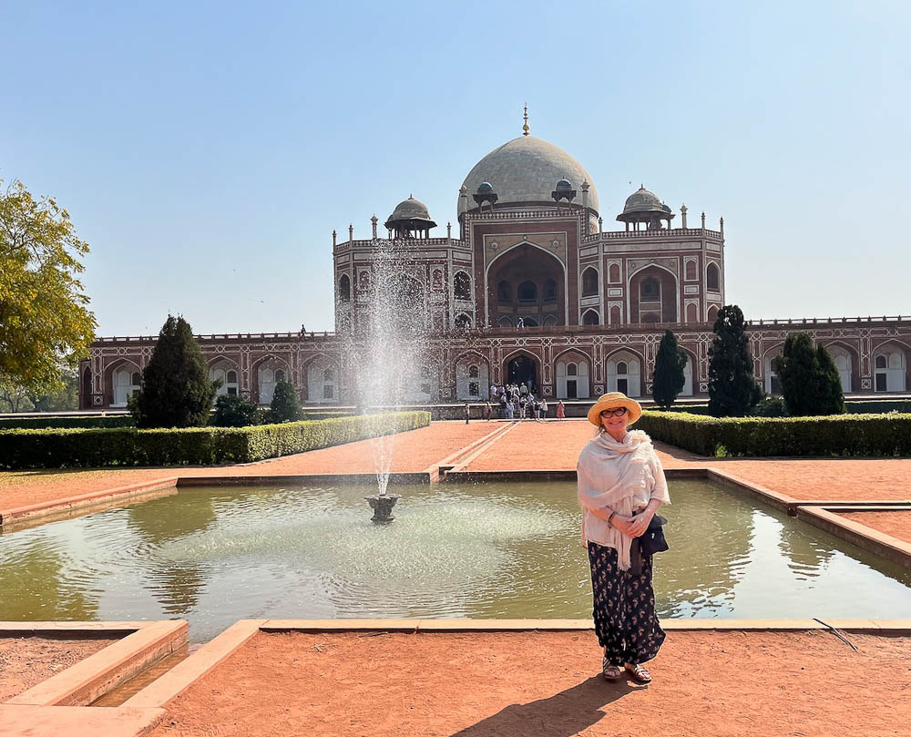
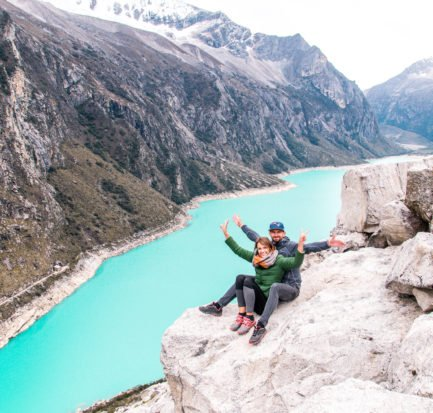
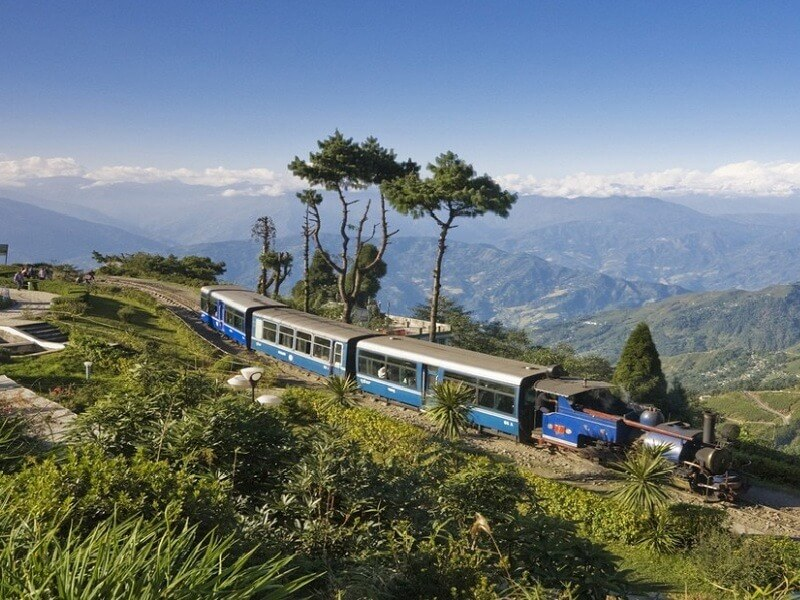

<div class="">


  <section style="background-color: antiquewhite; padding-top: 50px;">
    <div style="text-align: center;">
      
    </div>
    <div class="container pb-5" style="margin-top: -61px;">
      <div class="row d-flex justify-content-center">
        <div class="col-md-12 col-lg-10 col-xl-8">
          <div class="card">
            <div class="card-body">
              <div class="d-flex flex-start align-items-center">
                
                <div>
                  <h6 class="fw-bold mb-1" style="font-family: Amaranth, sans-serif; font-size: 40px; color: #43c1c6;">
                    {{ blogPost.title }}</h6>
                </div>
              </div>

              <p *ngIf="blogPost.id == 1" class="mt-3 mb-4 pb-2" style="font-family: sans-serif; font-size: 18px;">
                The India for Beginners annual Women-Only Holi Tour was a big hit with participant Darcy H. as you can
                read from her very detailed review below!
                <br><br>
                The tour itinerary started in Delhi and included a visit to Sariska tiger reserve, four days in Jaipur
                where we celebrated Holi at a fabulous private party and then, at the end, we went to the Taj Mahal. I
                accompanied the tour and had a great time with the group, which also included Rita, Kathy, Paola, and
                Maria. Here’s Darcy’s review:
                <br><br>
                
                <br><br>
                I especially enjoyed being accompanied on our tour by Mariellen, the proprietor of Breathedreamgo and a
                local resident. Her preparedness to go above and beyond in ensuring our India visit was not just a tour
                but an experience. Her familiarity with all our hosts and guides and the localities and culture was a
                delight and made the experience very personal and intimate. I’m thankful I finally visited India, and
                I’m grateful to Mariellen and Breathedreamgo for the opportunity to experience such a memorable and
                personal adventure.
              </p>

              <p *ngIf="blogPost.id == 2" class="mt-3 mb-4 pb-2" style="font-family: sans-serif; font-size: 18px;">
                During winter, India’s tropical beaches are the place to be! Head to Goa, Kerala or other beautiful beaches found along India’s very long coastline.
                <br><br>
                The Winter Season is the ideal time to head to parts of tropical India especially those places of outstanding beauty that are difficult to visit when the mercury rises. The Winters in India are never particularly harsh except for places situated at high altitude. Of course, first time travellers might visit The Golden Triangle or parts of Rajasthan but if you are looking for something slightly different, the following destinations are your best bet.
                <br><br>
                
                <br><br>
                Escape to the riverside town of Varanasi – considered the spiritual capital of India. A city of 2000 or more temples, this is a place of pilgrimage. Many Hindus visit Varanasi to perform last funeral rites, beside the sacred Ganges. Witnessing the daily evening Ganga aarti (prayer ritual) at the famous Dashashwamedh Ghat, near Kashi Vishwanath Temple with the clamour of cymbals, rhythmic chanting and the heady perfume of incense by the ancient ghats, is a mesmerizing spectacle.
              </p>

              <p *ngIf="blogPost.id == 3" class="mt-3 mb-4 pb-2" style="font-family: sans-serif; font-size: 18px;">
                Tourism is one of the world’s most important activities, involving millions of people, generating local
                employment, stimulating improvements to infrastructure. Tourism is considered to be successful as long
                as the benefits are not outweighed by the costs. The use of tourism should be taken as a regional
                development tool. Tourism in Darjeeling generates an annual revenue of Rs 450 crore, with tea and DHR
                playing a niche role in it
                <br><br>
                Tiger Hill, located 14kms from Darjeeling in Ghoom, the highest railway station in India stands at
                8500ft above sea level and is the most popular tourist destination in Darjeeling. Tiger Hill is a real
                attraction among the tourists, with a spectacular vantage point view of the third highest mountain peak,
                Kanchenjunga and world’s highest peak Mount Everest. Almost 4000 tourists visit Tiger Hill during the
                peak season everyday for the sunrise. There is a continuous rise in the number of tourists in Tiger
                Hill. It is recorded that in 2011-12 there is 1,82,021 numbers of tourists (both domestic and foreign)
                coming to this spot, whereas the year 2014-15 has recorded the highest number of tourists in Tiger Hill
                with 2,39,101
                <br> <br>
                
                <br> <br>
                Tiger Hill is the central tourist site for middle income people. The results of the survey shows that
                the educated tourists (domestic and international) are well known of the place Tiger Hill and they love
                visiting the place even more than twice. Needless to say that, a trip to Darjeeling is incomplete
                without visiting Tiger Hill. The view of the sunrise, nature friendly environment, and chilled weather
                allows the tourists to visit the place again and again, adding recreational benefits to the region.
              </p>


              <ul class="list-group">
                <li *ngFor="let comment of comments; let i = index" class="list-group-item">
                  <i class="fa fa-comments" aria-hidden="true"></i>
                  {{ comment }}
              
                  <div style="margin-top: 10px;">
                    <span *ngIf="!likeStatus[i]" class="like" (click)="likebtn(i)">
                      <i class="fa fa-thumbs-o-up" aria-hidden="true"></i>
                      Like
                    </span>
                    <span *ngIf="likeStatus[i]" class="like" (click)="likebtn(i)">
                      <i class="fa fa-thumbs-up" aria-hidden="true"></i>
                      Liked
                    </span>
                  </div>
                </li>
              </ul>
              

            </div>
            <div class="card-footer py-3 border-0" style="background-color: #f8f9fa;">
              <div class="d-flex flex-start w-100">
                
                <div data-mdb-input-init class="form-outline w-100">
                  <textarea [(ngModel)]="newComment" class="form-control" id="textAreaExample" rows="4"
                    style="background: #fff;"></textarea>
                  <label class="form-label" for="textAreaExample">Comment</label>
                </div>
              </div>
              <div class="float-end mt-2 pt-1">
                <button style="margin-right: 5px;" (click)="addComment()" type="" data-mdb-button-init
                  data-mdb-ripple-init class="btn btn-primary btn-sm">Post comment</button>
                <button (click)="Cancel()" type="button" data-mdb-button-init data-mdb-ripple-init
                  class="btn btn-outline-primary btn-sm">Cancel</button>
              </div>
            </div>
          </div>
        </div>
      </div>
    </div>
  </section>

</div>